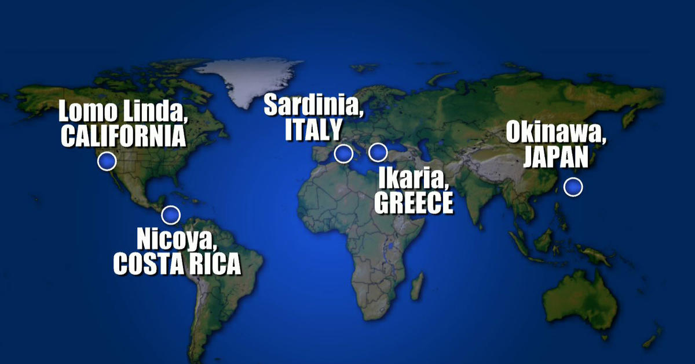

What are Blue Zones
The Blue Zones are five regions across the world where people
tend to live longer lifes, often exceeding 100 years of age.
The five Blue Zones are:
Sardinia in Italy (Sardinia diet)
Okinawa in Japan (Okinawa diet)
Ikaria in Greece (Ikaria diet)
Nicoya in Costa Rica (Nicoya diet)
Lomo Linda in California (Seventh-day adventist diet)
